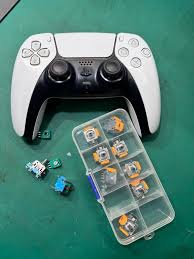
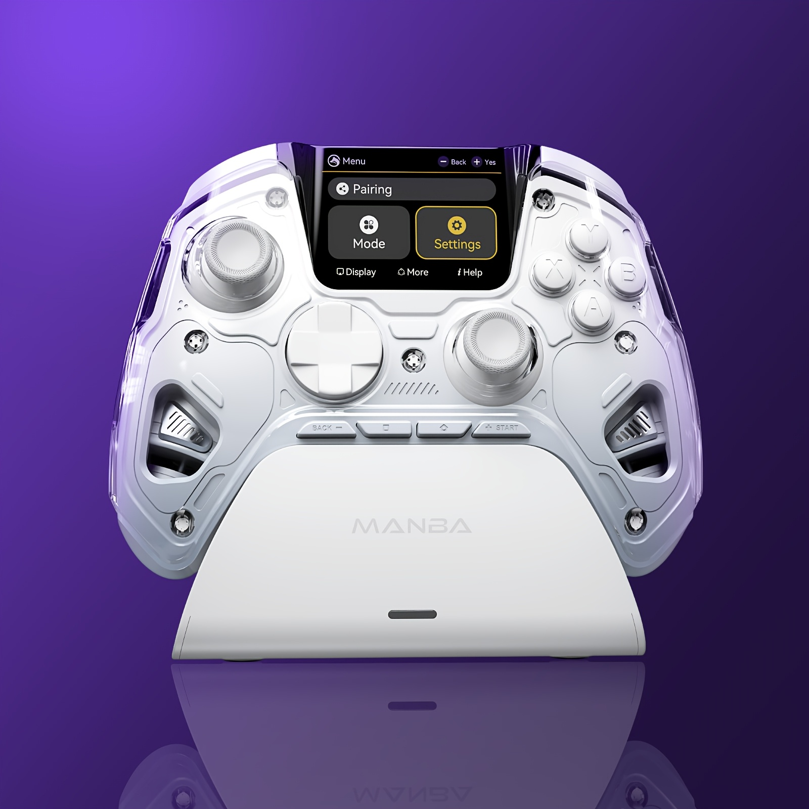

Joystick Tradicional
Control que utiliza potenciómetros mecánicos para detectar el movimiento de los sticks. Con el uso y el desgaste puede presentar fallas como el stick drift, donde el personaje se mueve solo.

Tu guía definitiva sobre periféricos de control.
El joystick es una clara referencia de “tecnología en tus manos” porque concentra precisión, conectividad y respuesta inmediata en un solo dispositivo.
Control que utiliza potenciómetros mecánicos para detectar el movimiento de los sticks. Con el uso y el desgaste puede presentar fallas como el stick drift, donde el personaje se mueve solo.

A diferencia de los joysticks tradicionales, los que usan sensores Hall Effect no sufren de "stick drift" porque funcionan con imanes.
Ofrece mayor precisión, más durabilidad y reduce casi por completo el problema del stick drift.

Para personalización y juego competitivo, el mejor referente es el joystick Sony DualSense Edge. Este mando está diseñado para jugadores que buscan mayor precisión y control, ya que permite cambiar sticks, ajustar la sensibilidad de los gatillos,
configurar perfiles personalizados y reasignar botones según el tipo de juego. Además, su diseño ergonómico y materiales premium ofrecen una experiencia más cómoda y profesional, ideal para partidas competitivas y largas sesiones de juego.